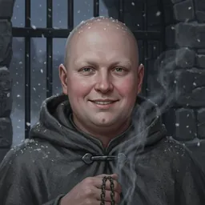
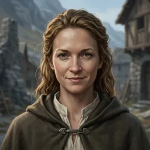
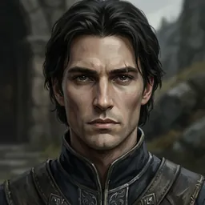
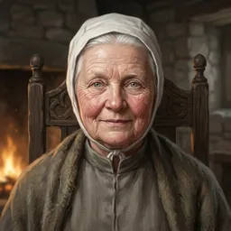
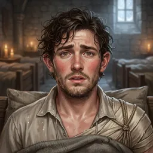
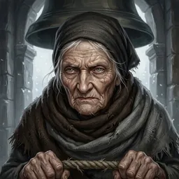
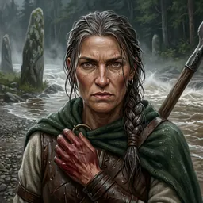

The cast
Characters
Everyone the page has shown or named. Nothing here runs ahead of the story.
FactionStatus
Roster
13
Ser Darrow of EdgemoorCaptain of the Ninth LanceLast seen: Chapter 4 · Scene 1 — The Almoner

Confessor Ivo MarrantConfessor, under the Knight-Confessor's seal
The Confessors
Last seen: Chapter 3 · Scene 3 — Nine Down
Maelis VorneMender of Saint Ysolde's
The House of Menders
Last seen: Chapter 4 · Scene 1 — The Almoner
Rae ThorneCarter of the last cart to the foot of the Steps
The House of Menders
Last seen: Chapter 3 · Scene 5 — Like a Stone
Ser Aldric VaneOf the Second LanceLast seen: Chapter 3 · Scene 2 — Blue Wax

Ser Hollis GarrowOf the Sixth LanceLast seen: Chapter 4 · Scene 1 — The Almoner

Wren AshdownLedger-keeper of Saint Ysolde's
The House of Menders
Last seen: Chapter 3 · Climax — What Was CarriedBrother AnselmAlmoner of Saint Ysolde's
The House of Menders
Last seen: Chapter 4 · Scene 1 — The AlmonerMirrenBrother Anselm's sister, held at Calden
The Crown
Named in: Chapter 4 · Scene 1 — The Almoner
Mother IonePrior of Saint Ysolde's
The House of Menders
Last seen: Chapter 4 · Scene 1 — The Almoner
Ser Benedek OrrinOf Hollis's Sixth; the next cot
hollowedThe Sixth Lance
Last seen: Chapter 3 · Scene 7 — The Bar
Sister PellKeeper of the bells of Saint Ysolde's
The House of Menders
Last seen: Chapter 3 · Scene 1 — The Flour
The red-handed womanThe woman at the front of the clan line at Harrow Ford
unknownThe clans of the Thornwild
Last seen: Prologue · I — Harrow Ford